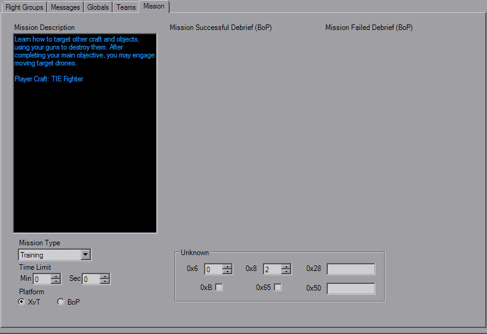

Mission Parameters

The Mission tab sets a couple of other overall settings. The large text boxes at the top (when available) are the mission texts for before and after the missions.
Below that is the Mission Type, which normally will be "Training". Set a time limit for the mission if you wish, and below that is the option to toggle the mission between XvT and BoP.
Unsure if WinType has a real effect. Goals unimportant prevents the mission from ending based on goals, useful for melees where you want to keep earning points. The randomizer value helps init backdrops and asteroids if you want to fiddle with that. It's imperitive that this value is the same for all players if engaging in multiplayer.